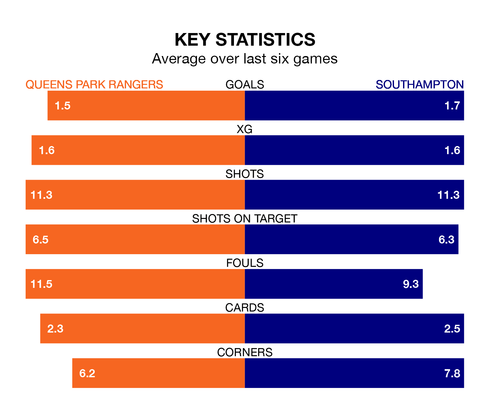

Mid-season relegation candidates Queens Park Rangers face a challenge against high-flying Southampton at Loftus Road on Saturday.
Queens Park Rangers are 22nd in the Championship table, and have picked up five wins and five draws in their 22 games to date.
The Saints, meanwhile, are fourth in the standings with 42 points, having won 12 and drawn six, and are 13 points behind table-toppers Leicester City.
With 20 goals in 22 games so far this season, QPR are the league's joint-third-lowest scorers with 0.9 goals per game. And they are conceding more than average, letting in 32 goals at a rate of 1.5 per game.
Southampton, meanwhile, are above average scorers, with 1.7 goals per game, compared to a league average of 1.4. They have conceded 1.3 goals per game.
In Adam Armstrong, the Saints have one of the league's most on-form strikers so far this season. He has notched 12 goals in 22 appearances, to sit second in the scoring charts.
Rangers' top scorers, with three goals each, are Chris Willock, Lyndon Dykes and Kenneth Paal.
The home side are in mixed form in the Championship, with three wins and a draw from their last six games.
With three wins and three draws over that period, the visitors' form is slightly better – they have taken 12 points from 18, compared to QPR's 10.
QPR's last match was on December 16, a 2-1 loss against Sheffield Wednesday, with Bambo Diaby getting the goal for QPR.
Southampton beat Blackburn Rovers 4-0 last time out, also on December 16, with Carlos Jonas Alcaraz, Samuel Edozie, Stuart Armstrong and Sékou Mara on the scoresheet.
Saturday's match will be refereed by Oliver Langford, who has taken charge of 12 Championship games so far this season, issuing one red card and booking 44 players. He has not awarded any penalties.
The last QPR game Langford refereed was a 2-1 away win against Cardiff City on August 12. He is yet to oversee a match featuring Southampton this season.
Updated: 15:16, 21/12/23